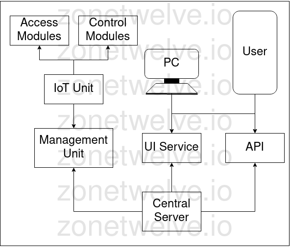
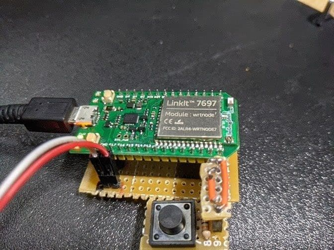
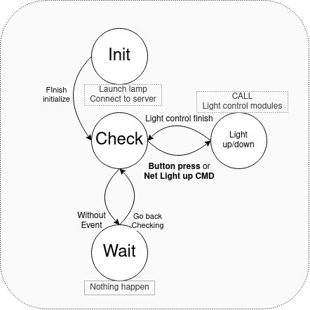
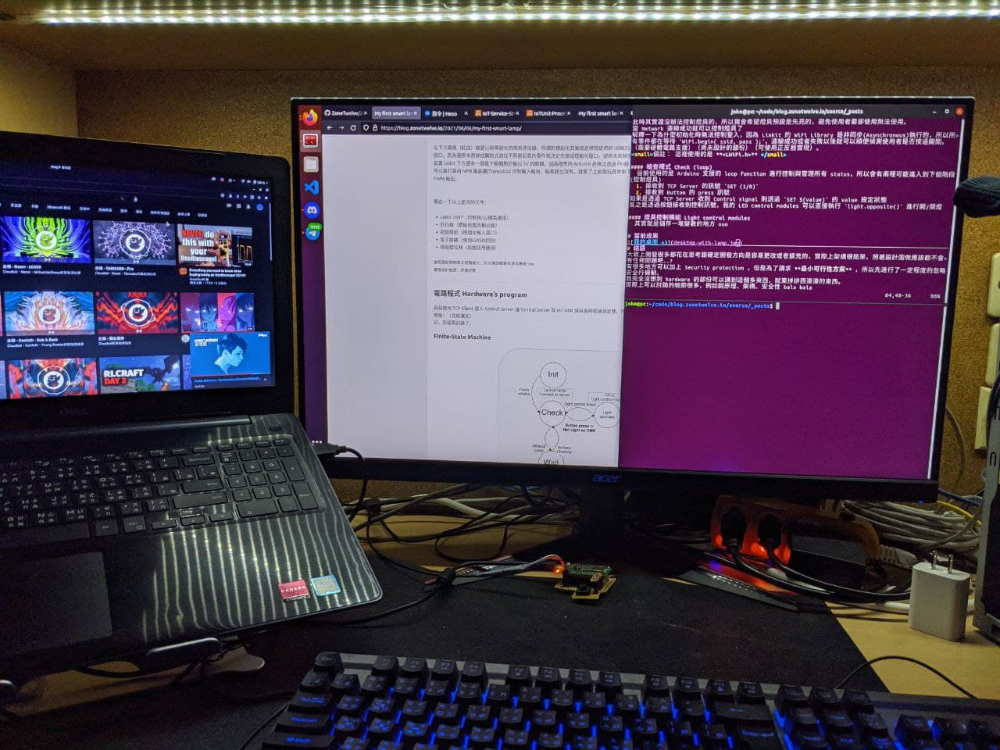

簡介 Intro
每一篇好的文章都有一個好的架構就跟 Project 一樣，如果想讓整個 Project 開發快速就需要先設計好架構，好的架構才能夠開發得流暢。
我簡單來提供我系統的架構，廢話少說先上圖。
架構 Structure

我們會有 User 使用我們的服務，而這個使用者就是我，我會至少需要兩種控制界面 物理控制、(魔法)網路控制，所以我的架構中有 Access Modules 以及 UI Service 兩種方式進行操作，當我們沒有(MP)網路的時候還是能夠透過物理按鍵實現開關燈。
硬體電路 IoT device preview
我這邊使用 Linkit 7697 作為 IoT Unit 的核心，預期透過 bluetooth / WiFi 等操作界面做初始化設定，設定越簡單快速越好，雖然我還沒做到這部份。 ; P
目前進度是讓 IoT Unit 自動化連線我設定好的 Server (ex. iot.zonetwelve.io)，就可以直接控制檯燈開關，即時尚未連線也可以直接使用物理按鈕控制電燈開關。

電路設計 Circuit design
左下方兩條（紅白）線是已經模組化的燈具連接線，所謂的模組化其實就是燈條提供的 USB(5V-9V) 的升壓電路，還有右下方模組化的按鈕接口，因為我原本想做成觸控式卻找不到當初買的零件就決定先做成模組化接口，提供未來替換使用。
其實 Linkit 下方還有一個電子開關用於輸出 5V 的開關，因為標準的 Arduino 是無法透過 Pin腳 直接輸出 5V Output。
所以我打算用 NPN 電晶體(Transistor) 控制輸入輸出，結果我也沒有，就拿了之前做玩具車剩下的 L293D 直接當成開關也可以作為 5V PWM 輸出。
簡述一下以上使用的元件：
- Linkit 7697（控制核心/網路通訊）
- 紅白線（模組化燈具輸出線）
- 按鈕模組（模組化輸入接口）
- 電子開關（使用L293D控制）
- 模組橋接器（給按鈕用連接）
當時是疫情期間又是颱風天，所以東西都拿來湊合著用 ouo
電路設計結語：焊接好累
電路程式 Hardware’s program
目前使用 TCP Client 連入 Central Server 讓 Central Server 與 IoT Unit 保持長時間通訊狀態，所以只要有開關需求時，就可以躺在床上關燈啦！（完結灑花）
好，該認真討論了。
Finite-State Machine

因為我計組沒學好，所以可能會畫錯 owo
初始化 initialize
Arduino 擁有初始化 funcition setup，所以當我的 Micro-chip 進入到 Program entry 以後，我會先初始化所有控制元件，設定 I/O Pin、Network connection 以及 Server conenction。
此時其實還沒辦法控制燈具的，所以我會希望燈具預設是先亮的，避免使用者要卻使用無法使用。
當 Network 連線成功就可以控制燈具了
解釋一下為什麼初始化時無法控制登入，因為 Linkit 的 WiFi Library 是非同步(Asynchronous)執行的，所以所有事件都在等待 WiFi.begin( ssid, pass );，連線成功或者失敗以後就可以順便偵測使用者是否按過開關。
（需要硬體電路支援）（尚未設計的部份）（可使用正反器實現）。
備註： 這裡使用的是 <LWiFi.h>
檢查模式 Check (loop)
目前使用的是 Arduino 支援的 loop function 進行控制與管理所有 status，所以會有兩種可能進入到下個階段(控制燈具)
- 接收到 TCP Server 的訊號
SET (1/0) - 接收到 Button 的 press 訊號
如果是透過 TCP Server 收到 Control signal 則透過SET ${value}的 value 設定狀態
反之是透過按鈕接收到控制訊號，我的 LED control modules 可以直接執行light.opposite()進行開/關燈
燈具控制模組 Light control modules
其實就是儲存一堆變數的地方 ouo
當前成果

結語
大致上開發很多都花在思考跟確定開發方向是容易更改或者擴充的，實際上架構很簡單，照著設計圖做應該都不會有任何問題吧..?
有很多地方可以加上 Security protection ，但是為了講求 最小可行性方案 ，所以先進行了一定程度的忽略安全行機制。
我完全沒想到 hardware 的部份可以講到這個多東西，就東拼拼西湊湊的東西。
實際上可以討論的細節很多，例如說原理、架構、安全性 bala bala
所以我就只好先寫到 hardware 的部份就先 publish 啦 ♡
未來設計方向 IoT device kernel (idea)
因為我開發時發現 Arduino 的流程不太適合我整套系統的運行，所以我正在思考要設計一個 kernel library，供小型的 Project 接上我的 Central Server，只不過 Central Server 的 UI/IoT API 都還沒設計好的前提下，應該不是最要緊的功能。